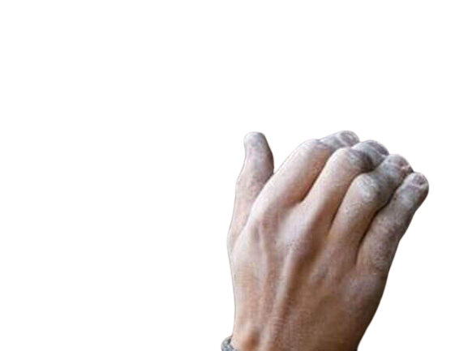

Bouldering Gear
First things first don't forget to bring water and first aid! You never know how long you will be out there, or if someone will get injured.
Now that you want to climb outside things get a little bit more expensive. If you haven't already bought all the gear from the gym climbing section I recommend you get it, as most places don't allow rentals to leave the gym. After you acquire the basics if you want to outdoor bouldery you need a crash pad. This is mandatory. Not having a crash pad makes climbing infinitely more dangerous and you will catch a lot of flack from the community. But this allows you to climb 15ft walls relatively safely and is all the safety gear you need to get started.
 |
If the crash pad and basic gear took all your money but you're still crazy about climbing I highly recommend getting some cheap battery powered led flood lights. These bad boys will allow you to climb at night which makes the experience about 10x scarier and 15x more fun.
Top Rope Gear
If you're more of a top rope kind of person and already have an act and the rest of the gear. 100% try outdoor top rope. The barrier of entry is just a rope too! I'd recommend a 9.8mm x 30ft for your first one. This is a pretty hefty rope that won't cut or get fuzzy easily and will allow yourself to climb some 15-20ft walls. Rope expands by about 10% when under tension so a 30ft rope can go up and down a 20ft wall. You should also get a rope bag to keep the rope clean and easy to carry but it's not necessary.
If the terrain is harder than a 5.8 or 9 you should really get a helmet too. It's not as necessary as a crash pad in bouldering but your head is fragile and the last thing you want is to take a fall and accidentally break your brain in a not cool way.
Gym Gear
This page will teach you what you need to bring to the wall as an indoor climber. This is also the bare minimum to climb in general as a gym will provide a lot for you.
 Gym Gear
Gym Gear
Outdoor Gear
This page will show you what is needed on top of the normal gear covered on the gym page. This mainly covers necessary items to stop your body from hitting the ground.
Outdoor Gear
Knots to know
Here you will learn some of the knots that can be either necessary or very handy depending on what situation you, or your partner get yourselfs into.
 Knots to Know
Knots to Know
Body care
Lastly, I'll teach you how to keep your body running like a well oiled machine. Skincare, flexibility and antagonistic training is necessary for any climber that wants to stay injury free.
 Body care